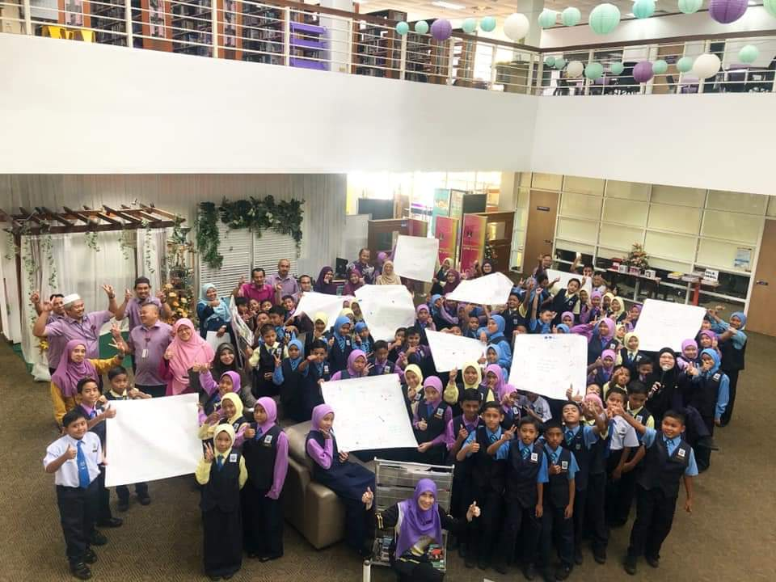
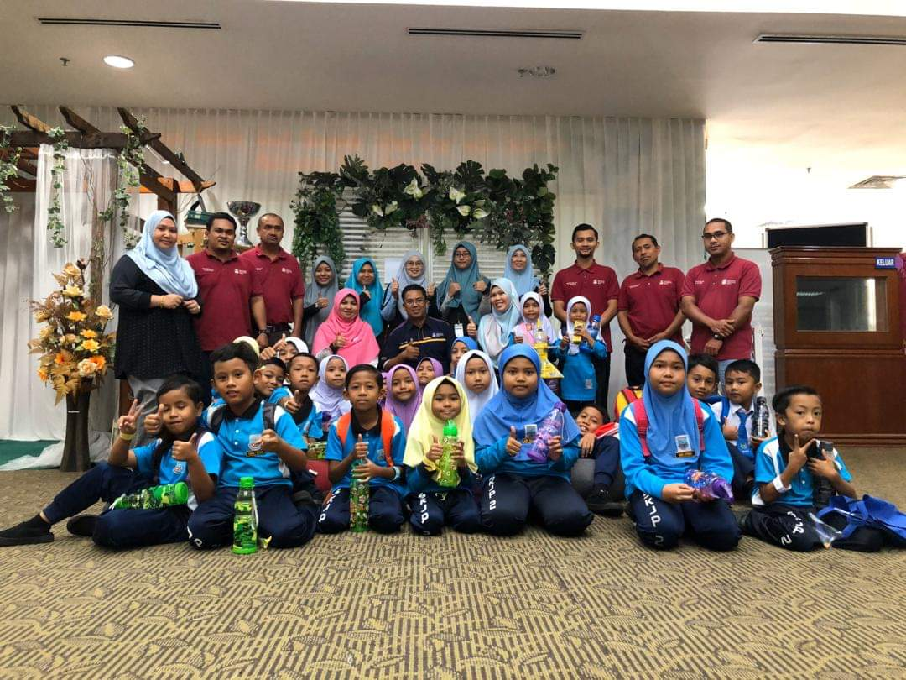
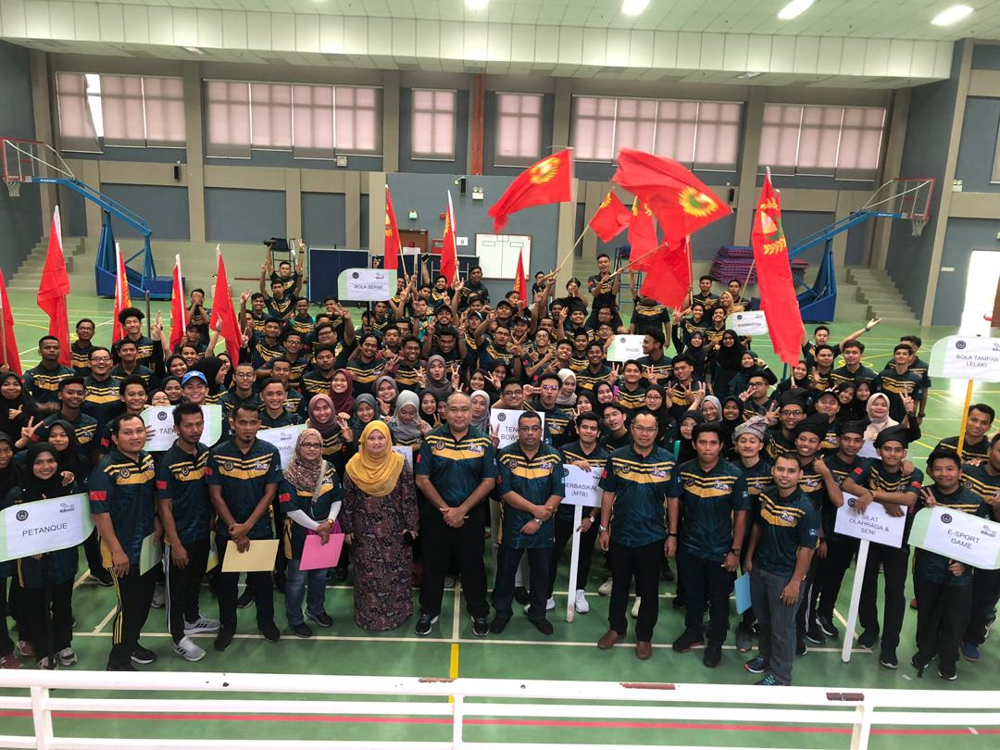

- EXPERIENCES -
1. INDUSTRIAL TRAINING
 
Industrial Training is a training conducted at all levels of higher education at the Institute of Higher Education (HEIs). This Industrial Training Program (LI) is in place to further empower HEIs to prepare them for the future. In fact, this industry training also gives students the opportunity to experience the real world of work.
This training trains students in the skills they need when working. This is because LI provides students with exposure and experience (in terms of effective communication, teamwork, work policies, regulations and professional perspectives and ethics). In addition, this exercise enhances the spirit of productivity among students and further enhances their confidence. This is important because without confidence, it can be difficult to adjust to the world of work.
The Al-Bukhari Library, UiTM Jengka branch of Pahang gave me the opportunity to practicethis industry in their library. Given this opportunity, I can apply the theoretical knowledge learned at the HEIs to the best of my ability. With this, I also gained experience in the world of work related tomy field of study and furthered my knowledge.
2. KARISMA UiTM

KARiSMA or UiTM Student Sports Carnival is a student competition between the University of Technology MARA SeMalaysia campus. The tournament, formerly known as the MARA Institute of Technology Student Sports or SUPER INTEKMA, has been held since 1990, with the organization taking turns on every campus.
It purposes is to produce UiTM students who are healthy, fit, competent and outstanding in sports and academia while fostering a sense of self, discipline, teamwork, tolerance and competitive competitiveness.
The objectives are, enhance UiTM image through sports achievements. Second, strengthen friendships between athletes and officials. Third, selects talented players to represent UiTM. Fourth, build and improve sports knowledge and practices. Fifth, build and enhance the knowledge and practice of sports to shape student personality and development. Sixth, provide useful experience to sports staff on the intricacies of organizing the tournament. Seventh, develop the talent and potential of the students by promoting high performance sports. lastly, emphasize leadership and cooperation through participation in the management of sports programs and towards the establishment of the UiTM Center for Excellence.